{kind=link}
{kind=link}
{kind=link}
{kind=link}
{kind=link}
{kind=link}
{kind=link}
{kind=link}
{kind=link}
{kind=link}
{kind=link}
{kind=link}
{kind=link}
{kind=link}
{kind=link}
{kind=link}
{kind=link}
{kind=link}
{kind=link}
{kind=link}
{kind=link}
{kind=link}
{kind=link}
{kind=link}
{kind=link}
{kind=link}
{kind=link}
{kind=link}
{kind=link}
{kind=link}
{kind=link}
{kind=link}
{kind=link}
{kind=link}
{kind=link}
Ficha de proyecto
Anota todo para poder repetirlo (¡o regalarlo!) cuando quieras.
Material gratuito · Hecho con cariño
Descubre los regalos que Rosina preparó para ti: stickers, fondos de pantalla, recursos para tus proyectos y mucho más. 🐑💕
26 stickers con fondo transparente en 512 × 512 px, el tamaño de los stickers de WhatsApp. Toca uno para descargarlo o baja el paquete completo. También puedes imprimir la hoja en papel adhesivo.
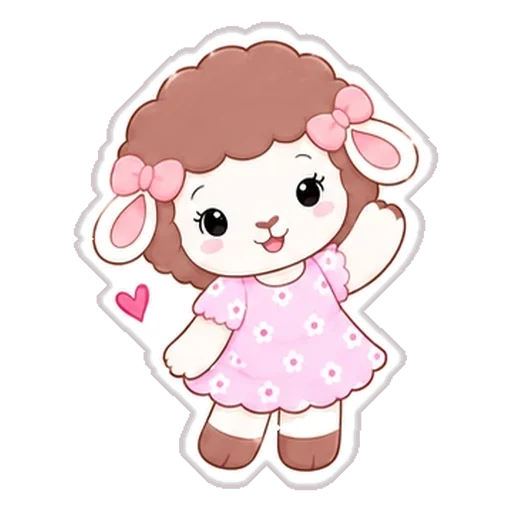
⬇ ⬇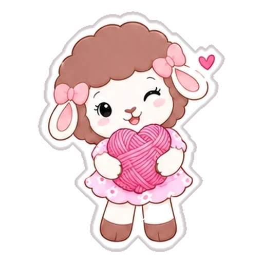
⬇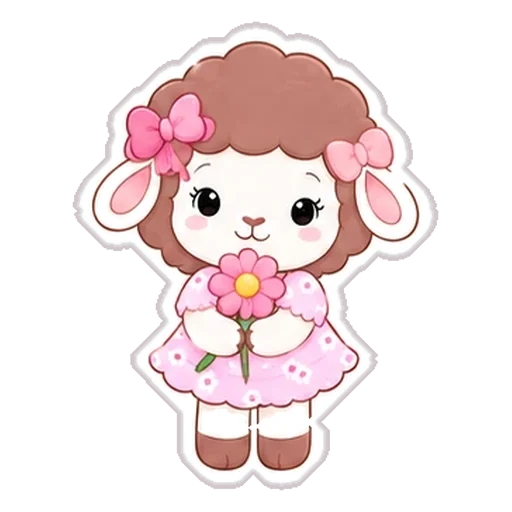
⬇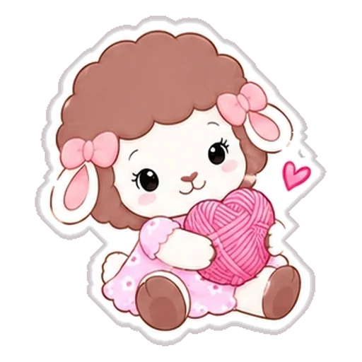
⬇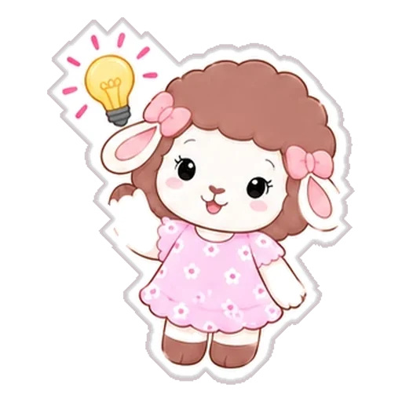
⬇ ⬇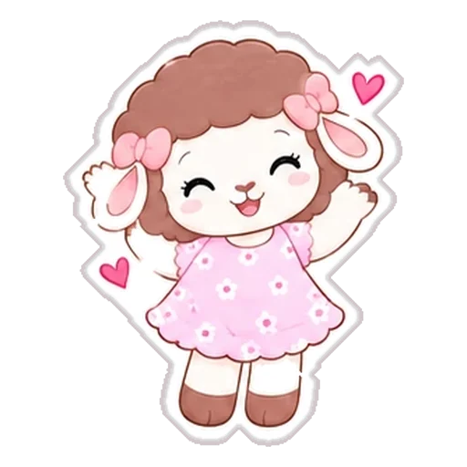
⬇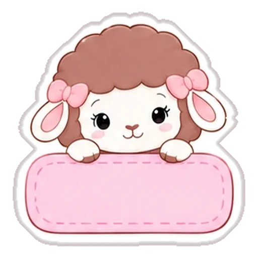
⬇ ⬇ ⬇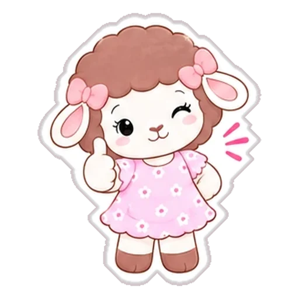
⬇ ⬇ ⬇ ⬇ ⬇ ⬇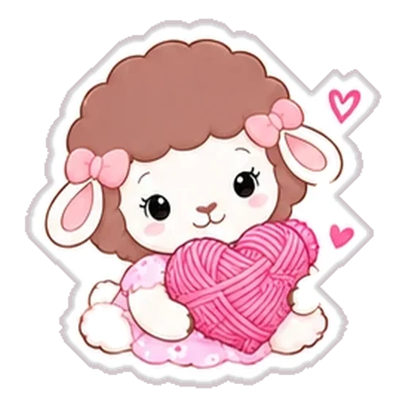
⬇ ⬇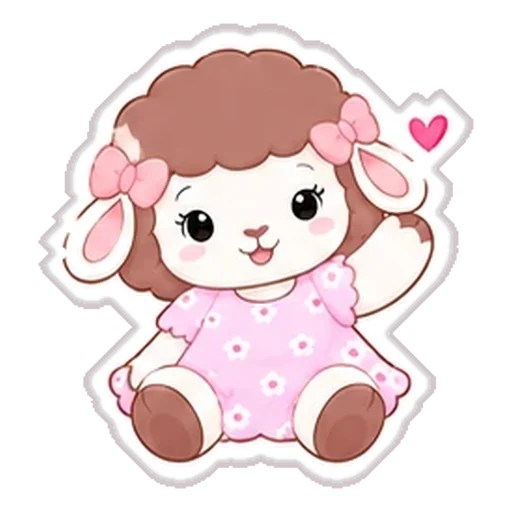
⬇Si tu versión de WhatsApp no tiene la opción Crear, puedes usar una app para crear paquetes de stickers y cargar ahí las imágenes.
Uso personal y para compartir en redes. Si los publicas, etiquétanos en @lanarosacrochet — ¡a Rosina le encanta ver dónde viaja! No está permitido venderlos.
9 fondos para tu pantalla de bloqueo o de inicio, hechos para que el reloj quede arriba sin tapar a Rosina. Elige el tamaño de tu celular y toca el fondo que más te guste.
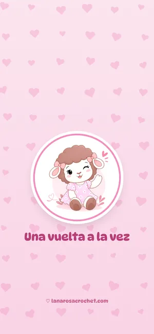
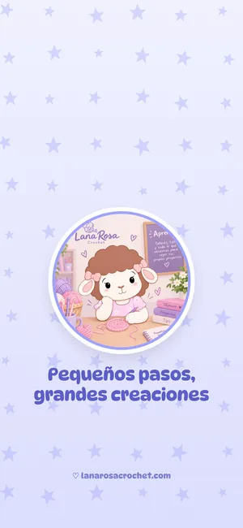
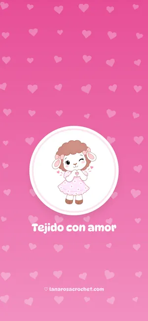
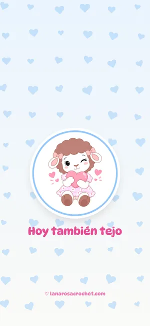
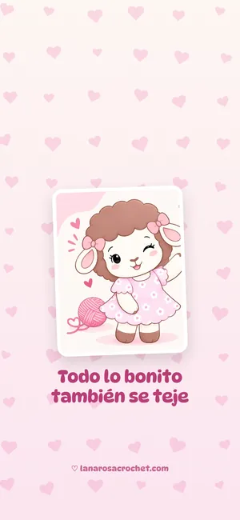
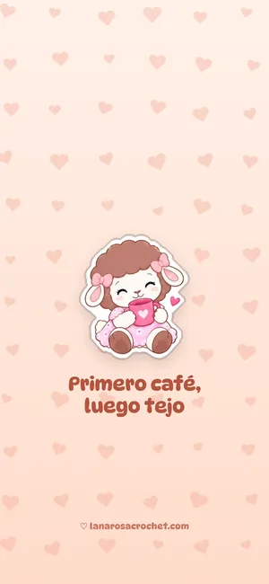
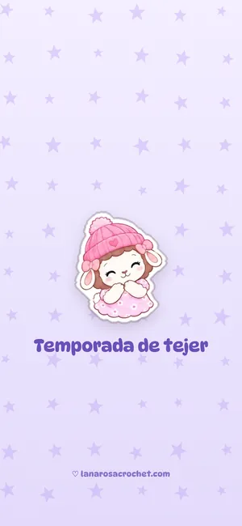
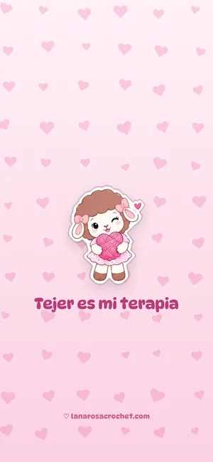
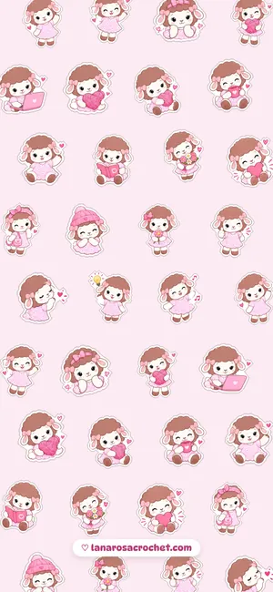
¿Desde el iPhone? Si el fondo se abre en vez de descargarse, mantenlo presionado y elige "Guardar en Fotos". En Samsung, al ponerlo como fondo puedes ajustarlo con los dedos si tu pantalla es distinta.
Todo lo que necesitas antes de empezar, revisado por Rosina. Ve marcando lo que ya tienes (se guarda en tu dispositivo) o imprímela y llévala a la mercería.
Llevas 0 de 0 listos
Tip de Rosina: si tu amigurumi es para un bebé o un niño menor de 3 años, borda los ojos con hilo en lugar de usar ojos de seguridad. Así no hay piezas pequeñas que se puedan soltar.
Marca lo que ya tienes y te enviamos por WhatsApp solo lo que te falta: hilos, agujas, ojos de seguridad, relleno y más.
¿Encontraste un patrón en inglés, portugués, chino o ruso? Usa esta plantilla para traducir cada punto. Elige los idiomas que quieres ver e imprímela para tenerla junto a tus agujas.
| Español | Inglés (EE. UU.) | Inglés (Reino Unido) | Portugués | Francés | Italiano | Chino | Ruso |
|---|---|---|---|---|---|---|---|
| cadcadeneta | chchain | chchain | corrcorrentinha | mlmaille en l'air | catcatenella | 锁锁针 | ВПвоздушная петля |
| pdpunto deslizado (punto raso) | sl stslip stitch | ssslip stitch | pbxponto baixíssimo | mcmaille coulée | mbssmaglia bassissima | 引引拔针 | ССсоединительный столбик |
| pbpunto bajo | scsingle crochet | dcdouble crochet | pbponto baixo | msmaille serrée | mbmaglia bassa | X短针 | СБНстолбик без накида |
| mpamedio punto alto | hdchalf double crochet | htrhalf treble crochet | mpameio ponto alto | dbdemi-bride | mmamezza maglia alta | T中长针 | ПСНполустолбик с накидом |
| papunto alto | dcdouble crochet | trtreble crochet | paponto alto | brbride | mamaglia alta | F长针 | СНстолбик с накидом |
| padpunto alto doble | trtreble crochet | dtrdouble treble crochet | padponto alto duplo | dbrdouble bride | madmaglia alta doppia | E长长针 | С2Нстолбик с двумя накидами |
| amanillo mágico | MRmagic ring | MRmagic ring | amanel mágico | cmcercle magique | amanello magico | 环形起针 / 魔术环 | КАкольцо амигуруми |
| aumaumento | incincrease | incincrease | aumaumento | augaugmentation | aumaumento | V加针 | прприбавка |
| dismdisminución | decdecrease | decdecrease | dimdiminuição | dimdiminution | dimdiminuzione | A减针 | убубавка |
| dism invdisminución invisible | inv decinvisible decrease | inv decinvisible decrease | dim invdiminuição invisível | dim invdiminution invisible | dim invdiminuzione invisibile | 隐形减针 | невидимая убавка |
| ptopunto | ststitch | ststitch | ptponto | mmaille | mmaglia | 针 | ппетля |
| vvuelta / hilera | rnd / rowround / row | rnd / rowround / row | carrcarreira / volta | rg / trang / tour | g / fgiro / ferro | R圈 / 行 | рряд / круг |
| espespacio | spspace | spspace | espespaço | espespace | spspazio | 空隙 | арка |
| lazlazada (hebra sobre la aguja) | yoyarn over | yrhyarn round hook | lçlaçada | jjeté | gettgettato | 绕线 | ннакид |
| hdsolo hebra delantera | FLOfront loop only | FLOfront loop only | só na alça da frente | dans le brin avant | solo asola anteriore | 只钩前半针 | за переднюю полупетлю |
| htsolo hebra trasera | BLOback loop only | BLOback loop only | só na alça de trás | dans le brin arrière | solo asola posteriore | 只钩后半针 | за заднюю полупетлю |
| salsaltar un punto | skskip | missmiss | pular | sauter | saltare | 跳过 | пропустить петлю |
| jtsjuntos | togtogether | togtogether | jtsjuntos | ensensemble | insinsieme | 并针 | вместе |
| MPmarcador de puntos | PM / SMplace marker / stitch marker | PM / SMplace marker / stitch marker | marcador de pontos | marqueur de mailles | segnapunti | 记号扣 | маркер |
| rep / * *repetir lo que está entre asteriscos | rep / * *repeat | rep / * *repeat | reprepetir | réprépéter | ripripetere | *…*重复 | повт.повторить |
¡Ojo con el inglés! Los patrones de EE. UU. y del Reino Unido usan los mismos nombres para puntos distintos: el double crochet americano es nuestro punto alto, pero el británico es punto bajo. Revisa siempre de dónde viene el patrón. Las abreviaturas en español también cambian un poco según el país; aquí usamos las más comunes en Latinoamérica. ¿No sabes qué significa algún punto? Míralo en el glosario ilustrado.
Rosina hace las cuentas por ti: reparte aumentos y disminuciones, adapta un patrón a tu muestra, estima cuánta lana necesitas y lleva la cuenta de tus vueltas.
Rosina recuerda tu cuenta en este dispositivo, aunque cierres la página.
Tres hojas para organizar tu tejido: la ficha de cada proyecto, tu semana y el control de pedidos si vendes lo que tejes. Llénalas aquí mismo (se guardan en tu dispositivo) o imprímelas en blanco para escribir a mano.
Anota todo para poder repetirlo (¡o regalarlo!) cuando quieras.
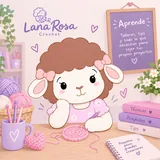
Semana del
Para tejedoras emprendedoras: que ningún pedido se te escape.
| Cliente | Pedido | Entrega | Precio | Abono | Estado |
|---|
Compártelo con tus amigas tejedoras y síguenos para recibir más tips. Si quieres aprender con nosotras en persona, mira nuestros talleres.